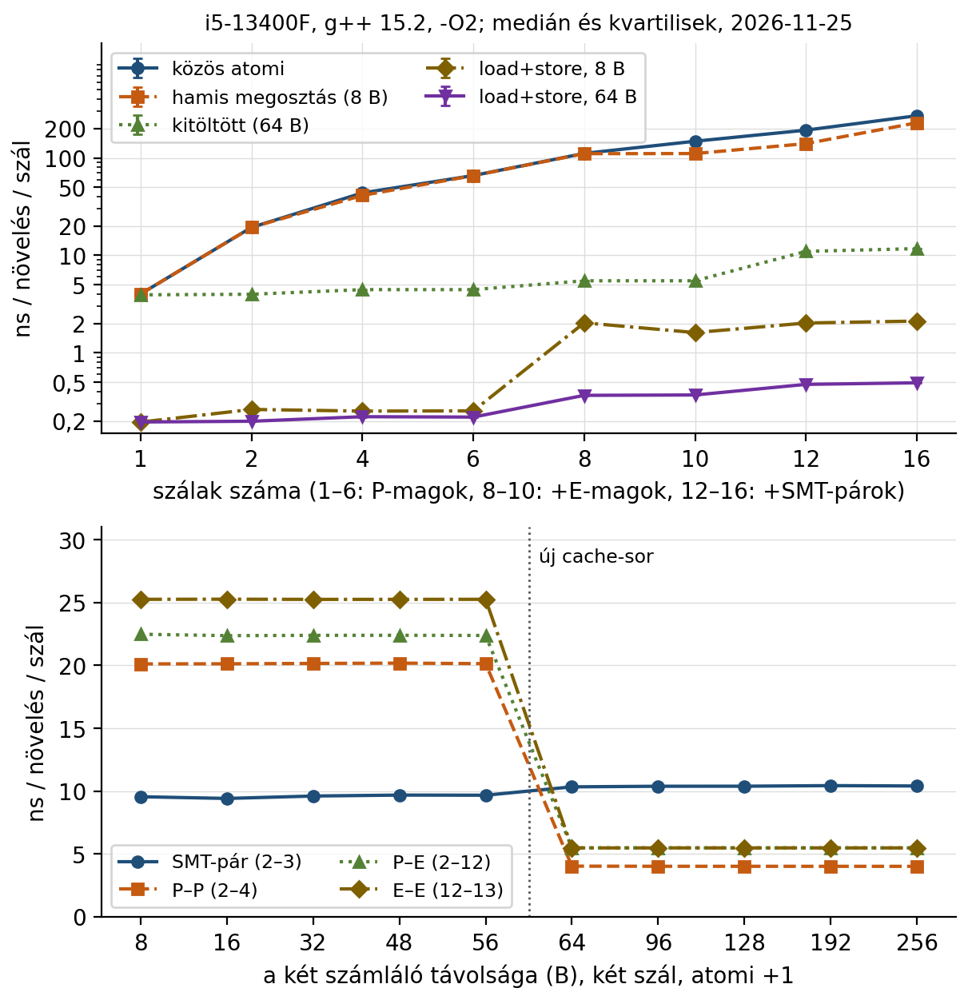

Egy párhuzamos program minden szála a saját eseményszámlálóját növeli. Nincs közös változó, nincs zár, a szálak logikailag teljesen függetlenek. A számlálók egy tömbben, egymás mellett laknak, 8 bájtonként. A mérőgépen (i5-13400F, két fizikai P-mag) egy növelés szálanként 19,36 ns-ba kerül. Ha a két szál ugyanazt az egyetlen közös számlálót növelné, az 19,37 ns lenne – gyakorlatilag ugyanannyi. Ha viszont a két számlálót 64 bájt távolságra tesszük, 3,99 ns.
A függetlennek hitt változók tehát pontosan olyan drágák, mint a valóban közösek. A jelenség neve hamis megosztás (false sharing): a hardver nem változókat, hanem cache-sorokat tart koherensen, és a két számláló egy soron osztozik. Ebben az alfejezetben a koherenciát mint teljesítménytényezőt mérjük, szimuláljuk és javítjuk.
Két ember egy füzetben vezeti a saját rovatát – az egyik az első sorba, a másik a másodikba ír. A koherencia szabálya szerint (A koherencia problémája és az MSI-protokoll) egyszerre csak egyvalaki írhat a füzetbe, tehát minden bejegyzés előtt a füzetet át kell adni a másiknak. Hogy a két rovat nem zavarja egymást, a füzetet ez nem érdekli.
Az animáció ezt mutatja: mindkét mag egy 64 bájtos sor más-más 8 bájtos szavát növeli. P0 írása után a sor M állapotban P0-nál van. Amikor P1 a saját szavát akarja növelni, az egész sor átvándorol hozzá, P0 másolata érvénytelen lesz; P0 következő írásakor vissza. Ezt a váltogatást hívják pingpongnak (ping-pong). Figyeld meg, hogy a 3. lépéstől a hiba oka „hamis megosztás”: a másik mag egy olyan szót írt, amelyre nekünk nincs szükségünk.
A 3C-modell (AMAT, a hibák osztályozása és a többszintű cache) kötelező, kapacitási és ütközési hibái egyetlen magon is előfordulnak. Többmagos gépen megjelenik egy negyedik fajta.
Definíció. Koherenciahiba (coherence miss): olyan cache-hiba, amelynek oka, hogy egy másik mag írása érvénytelenítette (vagy módosítottá tette máshol) a sort. Két alfaja:
A valódi megosztást az algoritmus okozza, megszüntetni csak a kommunikáció csökkentésével lehet (ritkábban szinkronizálni, szálankénti részeredmény). A hamis megosztás az adatelrendezés hibája, és átrendezéssel teljesen megszüntethető.
Legyen egy növelés ideje, ha a sor már a mag cache-ében van írható állapotban, a sor átvitele a másik magtól, és az átvitelek aránya (átvitel / művelet). Ha két mag ugyanazt a sort használja, a műveleteik nem futhatnak egyszerre – a sor egyszerre csak az egyiknél lehet írható. Két magnál ezért egy szál egy műveletére átlagosan
idő jut. A képlet két dolgot mond: a megosztott sor sorosítja a magokat (a 2-es szorzó, Amdahl „soros része”, lásd Amdahl és Gustafson törvénye), és minden átvitel ráfizetés. Ha egy mag egy birtoklás alatt átlagosan műveletet végez, akkor . Ez modell, nem a hardver pontos leírása.
A javítás az, hogy a gyakran, különböző magok által írt adatok
külön sorba kerüljenek. Ehhez két dolog kell:
igazítás (a változó sorhatáron kezdődjön) és
kitöltés (padding; a sor maradéka ne legyen más szálé).
C++-ban az alignas mindkettőt elintézi:
#include <atomic>
#include <cstdint>
#include <new>
struct alignas(std::hardware_destructive_interference_size) PaddedCounter {
std::atomic<std::uint64_t> value{0};
};
static_assert(sizeof(PaddedCounter) == std::hardware_destructive_interference_size);A std::hardware_destructive_interference_size a szabvány
által adott konstans: ekkora távolság kell, hogy két adat ne zavarja
egymást. A mérőgépen, g++ 15.2 alatt értéke 64 (a
std::vector<PaddedCounter> elemei így sorhatárra
kerülnek). Fejlécfájlban, nyilvános adatszerkezetben használva a GCC
figyelmeztethet, mert az érték fordítási beállítástól függhet. Egyes
processzorokon a hardveres előtöltő sorpárokat hoz be, vagy a sor 128
bájtos, ezért óvatosságból 128 bájtos kitöltést is alkalmaznak
(ellenőrizendő a célgépen).
A kitöltés memóriát fogyaszt, és rontja a lokalitást, ha az adatot egy szál sorban olvassa (Cache-szimulátor és cache-tudatos programozás). Csak a különböző szálak által írt adatokat érdemes szétválasztani; a csak olvasott adat nyugodtan megoszthat sort.
Továbbvitt eredmény. A counter
mikrobenchmark megmutatja: a hamisan megosztott számláló közel olyan
drága, mint a valóban közös, a sorhatárra igazított, kitöltött változat
viszont a magszámmal skálázódik. Erre épít az Atomi
műveletek a hardverben, a Zárak és tranzakciós
memória és a 2–3. záróprojekt: cache-szimulátor
és mikrobenchmark-sorozat. Ugyanebből következik, hogy a
koherenciaforgalom önálló teljesítménytényező: minden sorátvitel a magok
közötti hálózatot terheli, és a távolságtól függő időbe kerül. Ezt az Összeköttetések és NUMA topológiái és az Esettanulmány: mérésvezérelt optimalizálás false
sharing javítása viszik tovább.
A koherenciamérés érzékeny arra, hol futnak a szálak. A
code/bench/bench_counter.cpp ezért:
--cpus); az i5-13400F-en 0–11 a
hat P-mag két-két SMT-szála, 12–15 a négy E-mag;A központi művelet:
__attribute__((noinline)) static void inc_atomic(Atomic& c, long long n) {
for (long long i = 0; i < n; ++i) c.fetch_add(1, std::memory_order_relaxed);
}x86-on ez lock add utasításokra fordul (ellenőriztük a
bench_counter assemblyjében; a fordító a ciklust
kétszeresen kigörgette). Fordítás és futtatás:
make -C code/bench, majd
code/bench/build/bench_counter --mode counter --cpus 0,2,4,6 --threads 1,2,4.
A teljes sorozat a code/bench/measure.py parancsaival
készült.

Mérőgép: 13th Gen Intel Core i5-13400F, Linux 7.0, g++ 15.2.0,
-O2, powersave frekvenciaszabályozó,
2026-11-25; a mérés alatt egy webböngésző futott a háttérben.
A felső ábrán:
Az alsó ábra a sorméretet is kimutatja: 56 bájt távolságig a két számláló egy sorban van, 64-től külön, és a P–P pár ideje 20,1 ns-ról 4,0 ns-ra esik. Az SMT-pár (egy fizikai mag két szála) kivétel: a közös L1 miatt nincs sorvándorlás, ezért a távolság alig számít (9,5 → 10,3 ns).
A nem atomi (load + store) változatok
sokkal olcsóbbak, de a hatás ott is látszik: 8 szálon 2,0 ns szemben
0,37 ns-mal. Két szálon P-magok között alig van különbség (0,26 és 0,20
ns), feltehetően mert a mag a saját legutóbbi írását a tárolópufferből
olvassa vissza (Memóriafüggőségek: load/store queue
és függőségbecslés), így nem minden műveletnél kell megvárnia a
sort. Az SMT-páron viszont ugyanez a változat 3,3 ns a 0,45 ns helyett;
a valószínű ok, hogy a testvérszál írása miatt a processzornak újra kell
indítania a spekulatívan elvégzett olvasásokat (ellenőrizendő:
perf eseményszámlálóval).
A local változat (0,06 ns) nem szerepel az ábrán: ott a
fordító a ciklust szinte kiürítette, és a végeredményt egyetlen
lock add írja be, ezért nem hasonlítható egy növelés
árához.
1. A pingpong lépésenként. P0 a 0. szót (cím 0), P1 az 1. szót (cím 8) növeli felváltva, MESI alatt.
| # | művelet | busz | P0 | P1 | a hiba oka |
|---|---|---|---|---|---|
| 1 | P0 +1 @0 | BusRdX |
M | I | kötelező |
| 2 | P1 +1 @8 | BusRdX, Flush |
I | M | kötelező |
| 3 | P0 +1 @0 | BusRdX, Flush |
M | I | hamis megosztás |
| 4 | P1 +1 @8 | BusRdX, Flush |
I | M | hamis megosztás |
A 3. lépésben P0 azért hibázik, mert P1 írta a sort, de P1 csak a 8-as címet változtatta, P0 pedig a 0-st kéri: hamis megosztás. Ha mindkét mag a 0-s címet növelné, ugyanezek az üzenetek mennének, csak a hiba valódi megosztás volna. 64 bájtos lépésnél a 3. és 4. lépés találat.
2. Mekkora csomagokban dolgoznak a magok? A
ca065-maglatencia.csv ping-pong mérése szerint a 0. és 2.
logikai processzor (két P-mag) között egy sor egyirányú átadása
ns; a kitöltött változatból
ns. Ha minden művelethez átvitel kellene
(),
a modell
ns-ot jósolna. A mért 19,37 ns ennél jóval kisebb. Visszafelé
számolva:
A magok tehát átlagosan 6–7 műveletet végeznek, mielőtt a sor átvándorol: a másik mag kérése időbe telik, és addig a tulajdonos dolgozik. Ez becslés egy egyszerű modellből; a -t közvetlenül nem mértük, és az egy másik mérésből származik.
A counter_run a counter kernel összefésült
nyomát futtatja a szimulátoron; a burst a fenti
.
import sys; sys.path.insert(0, "code")
from archkit import coherence as C, perf
for label, stride in (("közös", 0), ("hamis (8 B)", 8), ("kitöltött (64 B)", 64)):
for k in (1, 7):
r = C.counter_run(ncores=2, ops_per_core=1000, stride=stride, burst=k)
print(f"{label:<17} k={k} átvitel/művelet={r['transfers_per_op']:.3f} "
f"valódi={r['true_sharing']:>4} hamis={r['false_sharing']:>4} "
f"össz={r['total']}")közös k=1 átvitel/művelet=1.000 valódi=1998 hamis= 0 össz=2000
közös k=7 átvitel/művelet=0.142 valódi= 284 hamis= 0 össz=2000
hamis (8 B) k=1 átvitel/művelet=1.000 valódi= 0 hamis=1998 össz=2000
hamis (8 B) k=7 átvitel/művelet=0.142 valódi= 0 hamis= 284 össz=2000
kitöltött (64 B) k=1 átvitel/művelet=0.000 valódi= 0 hamis= 0 össz=2000
kitöltött (64 B) k=7 átvitel/művelet=0.000 valódi= 0 hamis= 0 össz=2000A szimulátor a közös és a hamisan megosztott esetre ugyanannyi átvitelt számol, csak a hibák címkéje más – ez magyarázza, miért esik egybe a két mért görbe. A kitöltött változatnál a két kötelező hiba után nincs átvitel. A a forgalmat körülbelül hetedére csökkenti.
A mért adatok beolvasása és a soronkénti szálszám kiszámítása a 8 bájtos elrendezésnél:
meta, rows = perf.read_bench_csv("figures/data/ca058-meres.csv")
med = {(r["variant"], r["threads"]): float(r["median_ns_per_op"]) for r in rows}
print(meta["cpu"], "|", meta["date"][:10])
print("szál közös hamis8 kitöltött legtöbb szál egy soron (8 B-nél)")
for n in (1, 2, 6, 8, 10, 16):
per_line = min(n, 64 // 8)
print(f"{n:>4} {med['shared', n]:>6.1f} {med['false8', n]:>7.1f} "
f"{med['padded64', n]:>9.1f} {per_line}")13th Gen Intel(R) Core(TM) i5-13400F | 2026-11-25
szál közös hamis8 kitöltött legtöbb szál egy soron (8 B-nél)
1 4.0 4.0 3.9 1
2 19.4 19.4 4.0 2
6 65.9 65.7 4.4 6
8 111.2 110.5 5.5 8
10 148.3 110.8 5.5 8
16 270.9 229.3 11.7 8A kitöltött és a közös változat áteresztése között 16 szálon több mint 23-szoros a különbség, pedig mindkettő ugyanazt a 16 · 2 097 152 növelést végzi.
Az animáción az Elrendezés és az Egymás utáni műveletek (k) választót állíthatod; mindkét mag 6 növelést végez.
Saját gépeden futtasd a bench_counter --mode distance
mérést két fizikai magra, és keresd meg, melyik távolságnál esik le az
idő: az a sorméret.
alignas + kitöltés a szálankénti
rekordokra, vagy helyi változóban gyűjts, és a végén egyszer írd
ki.alignas(64) a
típuson, és ellenőrizd a címeket.struct S { std::atomic<int> a; std::atomic<int> b; };
két tagját két szál írja. Egy sorban vannak-e? Írd át úgy, hogy ne
legyenek, és add meg az új méretet.P0 W@0, P1 R@8, P0 W@0,
P1 R@8, P0 W@8, P1 R@8).counter_run-t 8 maggal,
mellett 8 és 64 bájtos lépéssel, és 16 bájtossal is. Magyarázd az
átvitelek számát.A koherenciahiba (a negyedik C) akkor keletkezik, ha
egy másik mag írása veszi el a sort. Valódi
megosztásnál az adat tényleg változott, hamis
megosztásnál csak a sor más része. A koherencia egysége a sor,
ezért a külön szavakat író magok is pingpongoznak; a mérőgépen két
P-magon 19,4 ns kontra 4,0 ns, 16 szálon az áteresztés több mint
23-szoros különbséget mutat. A javítás sorhatárra igazítás és
kitöltés
(alignas(std::hardware_destructive_interference_size),
x86-64-en 64 B). A szimulátor azonos átvitelszámot ad a közös és a
hamisan megosztott esetre. A koherenciaforgalom így teljesítménytényező:
a NUMA-rendszerekben és a valódi programok optimalizálásánál is számolni
kell vele.
1. Igen: a struktúra 8 bájtos, és (ha nem esik
sorhatárra) mindkét tag egy sorban van. Javítás:
struct S { alignas(64) std::atomic<int> a; alignas(64) std::atomic<int> b; };
– mérete 128 bájt.
2.
sim = C.Snoop(2, "MESI")
sim.run(C.parse_ops("P0W@0 P1R@8 P0W@0 P1R@8 P0W@8 P1R@8"))
for s in sim.steps:
bus = "+".join(m.kind for m in s.msgs)
print(f"P{s.core} {s.op}@{s.addr}: {s.miss or 'nem hiba':<9} {bus}")P0 W@0: cold BusRdX
P1 R@8: cold BusRd+Flush
P0 W@0: nem hiba BusUpgr
P1 R@8: false BusRd+Flush
P0 W@8: nem hiba BusUpgr
P1 R@8: true BusRd+FlushAz 1. és 2. lépés kötelező; a 3. és 5. nem hiba, hanem S → M
felfokozás (BusUpgr); a 4. hamis megosztás (P0 csak a 0-s
címet írta), a 6. valódi (P0 a 8-ast írta).
3. A 10 számláló 80 bájtot foglal: az első 8 szál a 0., a 8. és 9. az 1. sorban dolgozik. A közös változatnál 10 szál verseng egy soron, a hamisnál legfeljebb 8, a második soron csak kettő. A leglassabb csoport a 8 szálas, ezért az idő a 8 szálas méréshez (110,5 ns) áll közel: 110,8 ns.
4. A modell szerint egy soron , a kitöltött változaté . Még esetén is kétszeres az idő, tehát 10%-on belülre semmilyen -val nem lehet jutni: a sorosítás miatt a megosztott soron a két mag egymásra vár.
5.
for stride in (8, 16, 64):
r = C.counter_run(ncores=8, ops_per_core=1000, stride=stride, burst=1)
lines = (8 * stride + 63) // 64
print(f"lépés {stride:>2} B: sorok {lines}, átvitel/művelet {r['transfers_per_op']:.3f}")lépés 8 B: sorok 1, átvitel/művelet 1.000
lépés 16 B: sorok 2, átvitel/művelet 1.000
lépés 64 B: sorok 8, átvitel/művelet 0.0008 bájtnál egy soron 8 mag osztozik, és körbeforgó sorrendben minden művelet átvitellel jár; 16 bájtnál két sor, soronként 4 maggal, de minden sorra továbbra is mindig másik mag kerül sorra, ezért az arány közel 1; csak 64 bájtnál, soronként egy maggal tűnik el. A lépés felezése a sorszámot duplázza, de a hamis megosztást nem szünteti meg.
6. Két szál, két külön fizikai magra rögzítve,
mindegyik egy-egy atomi számlálót növel sokszor, a távolság 8, 16, …,
256 bájt:
bench_counter --mode distance --pairs A-B --ops 2097152 --reps 7,
ahol A és B az lscpu -e kimenete szerinti két különböző
mag. Értékelés: a medián ns/művelet ott esik le élesen, ahol a két
számláló először kerül külön sorba. Zavaró hatások: SMT-pár választása
(nincs lépcső), 128 bájtos párosított előtöltés (a lépcső 128-nál
lehet), frekvenciaváltás és háttérterhelés (ismétlés, szóródás közlése),
nem igazított puffer (a számlálók helye a sorhoz képest ismeretlen –
igazítsd 256 bájtra, ahogy a benchmark teszi).